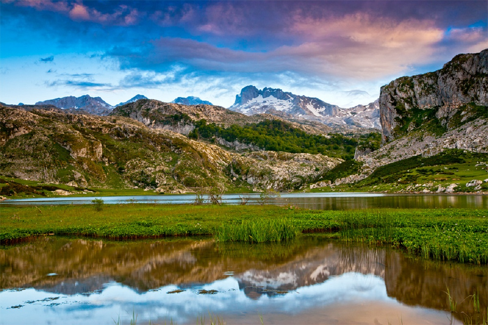
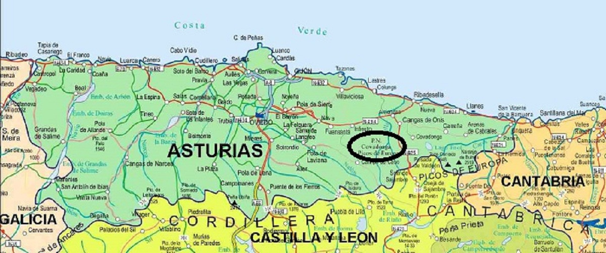
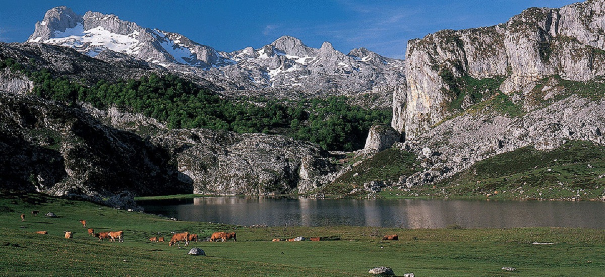
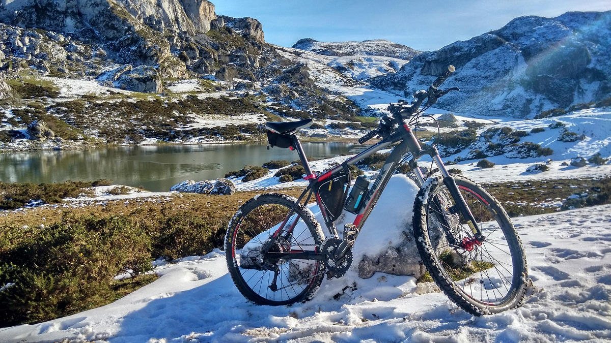
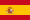
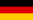
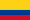
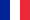
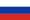

Lagos de Covadonga
Indice:
Lagos de Covadonga

El conjunto de los lagos de Covadonga (llamados Llagos de Cuadonga o Llagos d'Enol en asturiano) está formado por dos pequeños lagos, el Enol y el Ercina de origen glacial situados en la parte asturiana del Parque Nacional de los Picos de Europa, en el macizo occidental de dicha cadena montañosa. Existe un tercer lago, el Bricial, que sólo tiene agua durante el deshielo, pero también pertenece al conjunto. En Asturias son conocidos simplemente como los lagos.
Se situan en el concejo de Cangas de Onis y se accede a ellos a través de una carretera de 14 km que nace en el Real Sitio de Covadonga para llegar en primer lugar al lago Eno. Su frecuente uso de 1983 como final de etapa en la Vuelta ciclista a España ha popularizado internacionalmente el paraje.
La afluencia masiva de turistas, sobre todo aficionados al ciclismo, ha obligado a limitar el desarrollo de pruebas ciclistas en el entorno de Los Lagos. No obstante, la zona cuenta con una infraestructura turística.
La excesiva afluencia de visitas, en especial en temporada alta, también ha supuesto que el acceso en coche a los Lagos esté restringido, pudiendo acceder únicamente utilizando el transporte público habilitado para ello. Los vehículos particulares sólo pueden circular a primera hora de la mañana y a última de la tarde. En temporada baja, no hay restricciones de acceso con vehículo particular.
En las proximidades del Lago Ercina, en Buferrera, hasta 1979 se explotaron minas de hierro, manganeso y mercurio.
Ir al índice

Localización
Desde Cangas de Onis, y tomando la carretera AS-262 se llega, después de 10 km, al Santuario de Covadonga, que es donde realmente comienza la subida a través de la CO-4. Actualmente, en temporada alta el ascenso a los Lagos de Covadonga está restringido, y sólo se puede acceder en autobús, que sale desde las distintas paradas desde Cangas de Onis a Covadonga. El resto del año el acceso es libre.
Ir al índice

Características
Desde el Santuario, la subida consta de 14 km, en los que se salva un desnivel de 962 m, lo que supone una pendiente media del 6,87 %. El tramo más duro se encuentra entre los km 7 y 9, en las zonas conocidas como La Huesera (una recta de 800 m con rampas de entre el 12 y el 15 %) y el Mirador de la Reina, con rampas que alcanzan el 14 y el 15% de desnivel.
Ir al índice

Historia
Lagos de Covadonga se ascendió por primera vez en la historia de la Vuelta a España en la edición de 1983, el 2 de mayo. En una etapa procedente de Aguilar de Campoo y en un día de lluvia y viento, el vencedor en su cima fue Marino Lejarreta, y el posterior vencedor de la carrera, Bernard Hinault, llegó a comparar este puerto con el mítico Alpe d'Huez, lo que le empezó a dar fama mundial. En los días previos a la carrera, debido a que estos lagos son también conocidos como Los lagos de Enol, los periodistas deportivos hicieron un juego de palabras ante la batalla que se avecinaba y los llamaron Los lagos de Hinault, nombre con el que serían conocidos desde entonces en el mundo ciclista. En 20 ocasiones la Vuelta ha tenido final de etapa en Los Lagos, siendo los vencedores de etapa, desde entonces, los siguientes:
Ir al índice
Ciclismo
| Edición |
Vencedor |
Pais |
| 1983 |
Marino Lejarreta |
 |
| 1984 |
Reimund Dietzen |
 |
| 1985 |
Pedro Delgado |
|
| 1986 |
Robert Milar |
 |
| 1987 |
Lucio Herrera |
 |
| 1989 |
Alvaro Pino |
|
| 1991 |
Lucio Herrera |
|
| 1992 |
Pedro Delgado |
|
| 1993 |
Oliverio Rincon |
|
| 1994 |
Laurent Jalaber |
 |
| 1996 |
Laurent Jalaber |
|
| 1997 |
Pavel Tonkov |
 |
| 2000 |
Andrei Zintchenko |
|
| 2001 |
Juan Miguel Mercado |
|
| 2005 |
Eladio Jiménez |
|
| 2007 |
Vladimir Efimkin |
|
| 2010 |
Carlos Barredo1 |
|
| 2012 |
Antonio Piedra |
|
| 2014 |
Przemyslaw Niemiec |
.png) |
| 2016 |
Nairo Quintana |
|
1 Anulado por dopaje
Volver al menu inicial
Página realizada por F. Javier Fernández Fernández: Lenguaje de marcas y sistemas de la informacíón